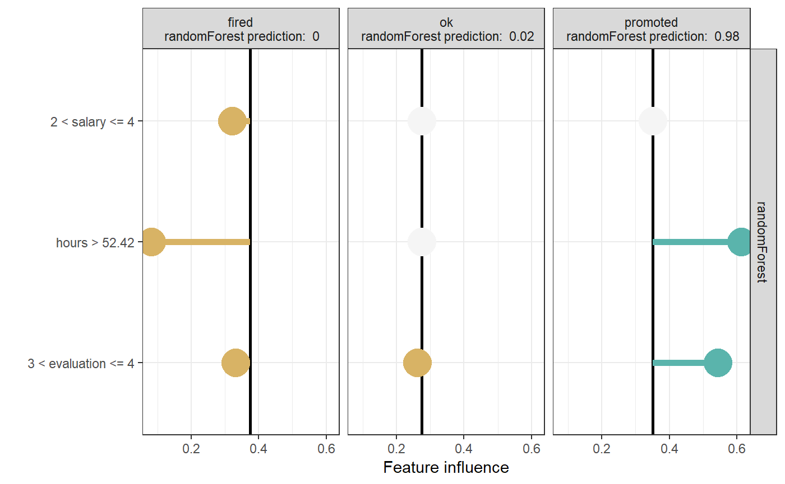
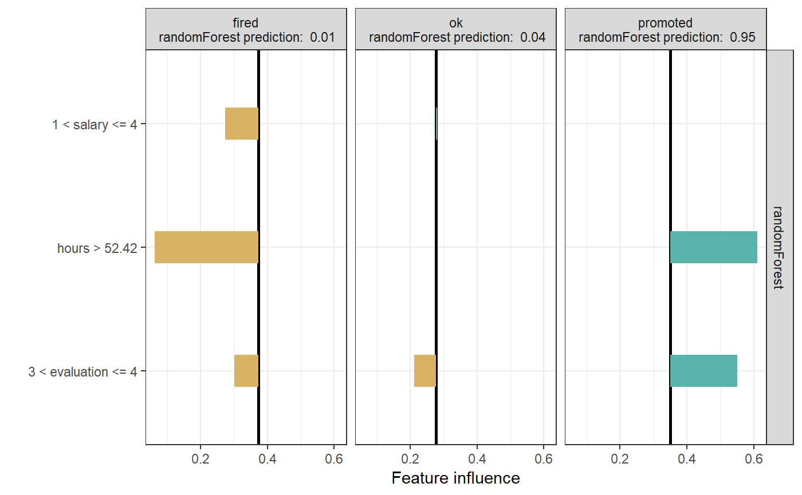

Explaining classification models with localModel package
Mateusz Staniak
Source:vignettes/classification_example.Rmd
classification_example.RmdExplaining classification models with the localModel package is just as simple as explaining regression. It is enough to work with predicted scores (class probabilities) rather than classes. In multiclass setting, a separate explanation is provided for each class probability.
We will work with the HR dataset from DALEX2 package. As in the regression example from Introduction to the localModel package, we will first create a random forest model and a DALEX2 explainer. Details about the method can be found in the Methodology behind localModel package vignette.
library(DALEX2)
library(randomForest)
library(localModel)
data('HR')
set.seed(17)
mrf <- randomForest(status ~., data = HR, ntree = 100)
explainer <- explain(mrf,
HR[, -6])
new_observation <- HR[10, -6]
new_observation
#> gender age hours evaluation salary
#> 12 female 33.16119 55.08747 4 4In DALEX2, we have built-in predict functions for some types of models. Random Forest is among these models.
model_lok <- individual_surrogate_model(explainer, new_observation,
size = 500, seed = 17)
plot(model_lok)
plot(model_lok, geom = "bar")
The plot shows how predictions for different classes are influenced by different features. For the actually predicted class, hours and evaluation have a strong positive effect.